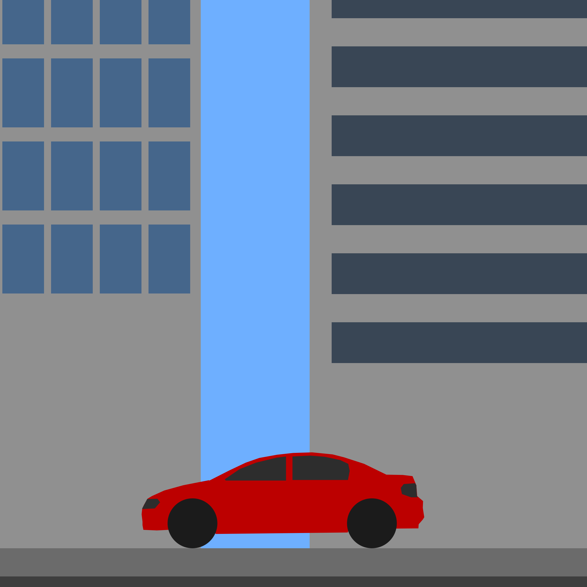
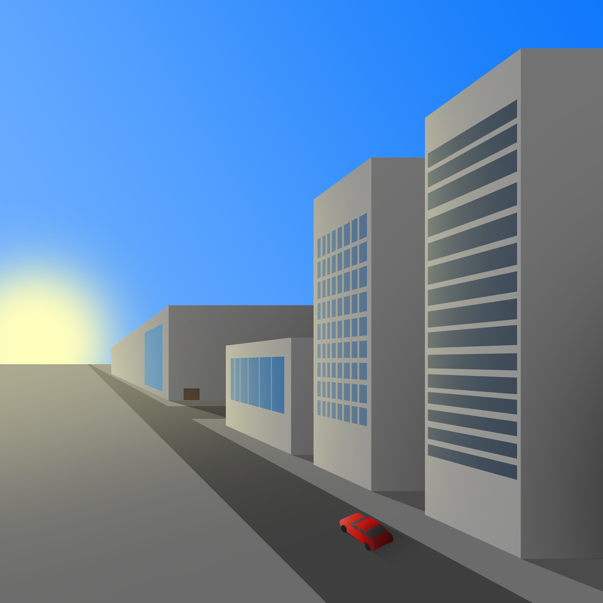

Artworks from the Art 12 Class
Down below are 2 artworks I created for the Two-Dimensional Design and Color Concepts class (Art 12, Professor Erik Friedman)
2D vs 3D, 2022
In this project, we had to produce two art pieces that resemble 2d and 3d perspectives. For this project, I went with having a 2d and 3d art piece of the same scene in order to make it easy to distinguish between the two. In the 2d piece, the lack of shading and the flat colors and shapes is what gives no depth and makes it 2d. In the 3d piece, I add a light source with shading, use perspective lines with a vanishing point, and change the viewer's location to shift the attention to the aspects of 3d.
 My Personality, 2022
For this project, I had to create a rendition of my personality as an art piece. To describe my personality, I put a smaller version of myself in my head with a light that shines because I would consider myself as someone who likes to sit in their own thoughts. Externally, I am reserved and very calm, but in my head I let my imagination run free. The light that shines bright in my art resembles my ideas while the smaller version of me in my head resembles how I am lost in my thoughts, blinded by the light.